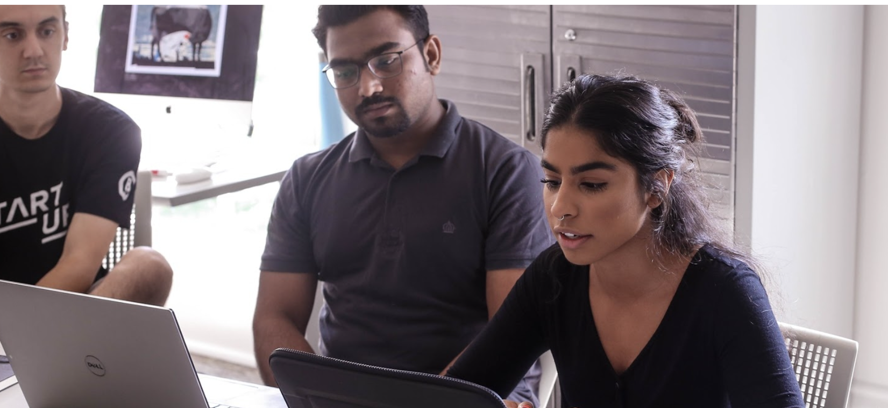
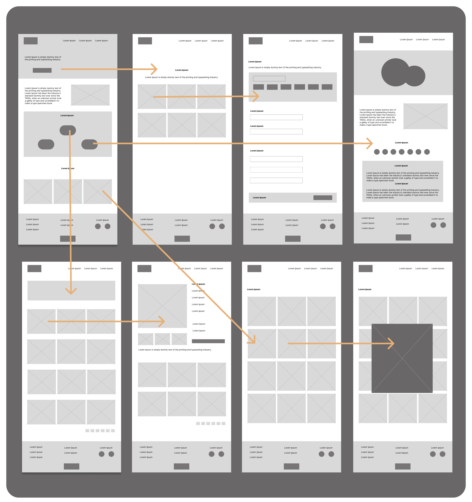
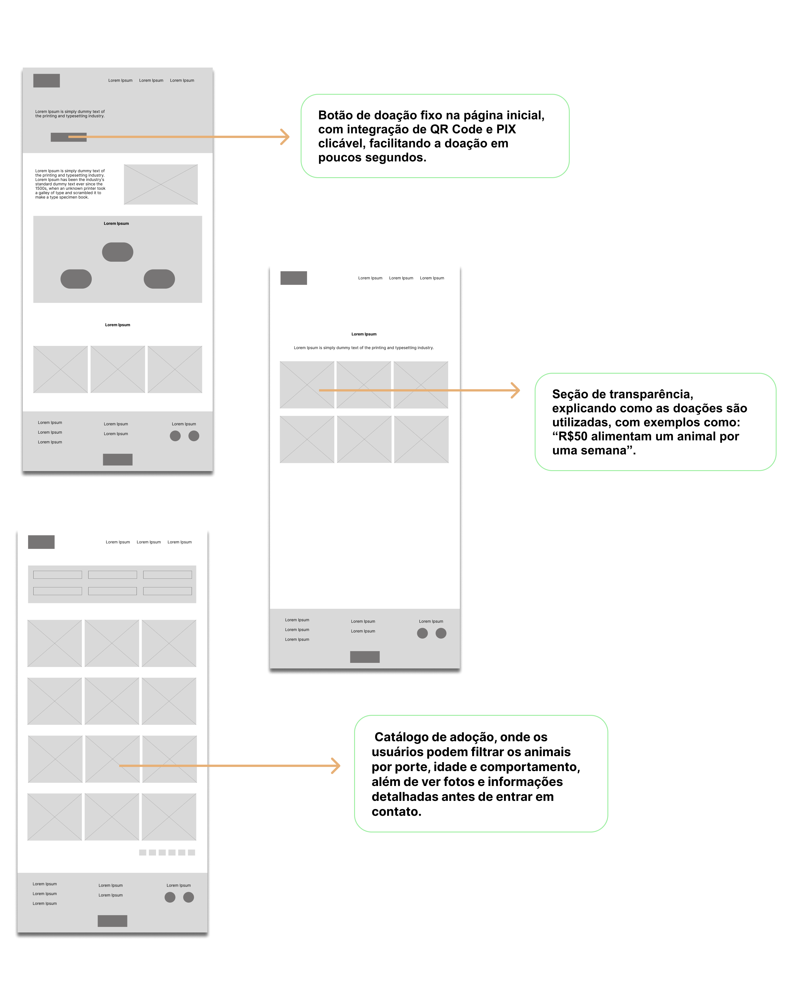
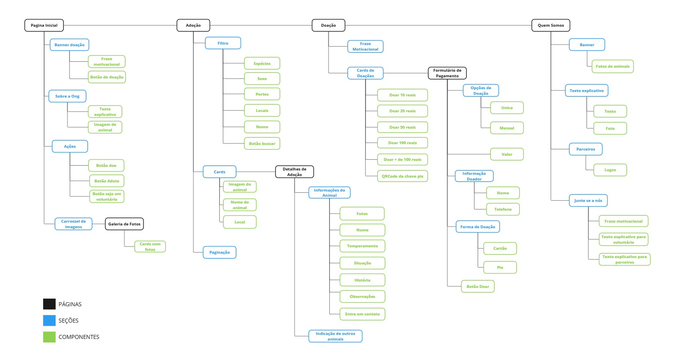
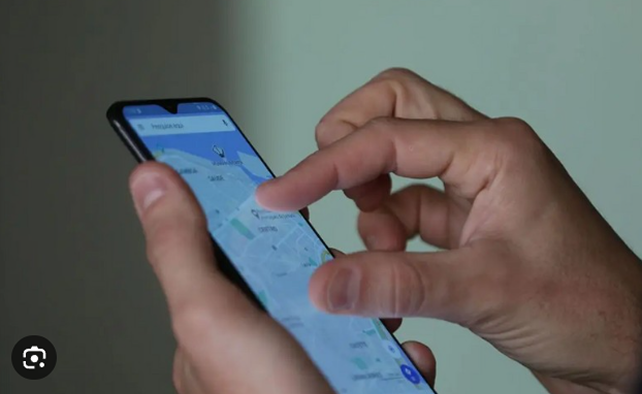

Desafio: A ONG dependia principalmente de redes sociais para promover adoções e doações. No entanto, os processos eram manuais e pouco eficientes, resultando em baixa arrecadação e dificuldades para conectar adotantes e animais.
Solução: Um site intuitivo para a ONG Proteção Animal, facilitando doações com um botão fixo e QR Code PIX, aumentando a transparência com uma seção detalhada sobre o impacto das doações e agilizando adoções com um catálogo filtrável de animais.
PESQUISA E DESCOBERTAS

Foram realizadas entrevistas qualitativas com 8 participantes: 3 adotantes em potencial, 3 doadores recorrentes e 2 voluntários, Para entender as necessidades, dores e expectativas dos usuários em relação ao site da ONG "Proteção Animal", focando nos processos de adoção, doação e voluntariado.
PONTOS PROBLEMÁTICOS
Doações complicadas: O processo via redes sociais era confuso e demorado (dificuldade para copiar a chave PIX ou entender como doar).
Desorganização visual: Nas redes sociais, a chave PIX muitas vezes se perdia em meio a outras informações, dificultando sua localização.
Falta de informações claras: Poucos detalhes sobre o estado de saúde e o comportamento dos animais disponíveis para adoção.
Dependência de mensagens privadas: Algumas doações só aconteciam após interação com a ONG para esclarecer dúvidas ou confirmar dados, criando atrito no processo.
IDEAÇÃO E SOLUÇÕES
Wireframes digitais


SITEMAP

TESTE DE USABILIDADE
.................. Algum texto aqui .................

RESULTADOS
Após a realização de testes de usabilidade com um grupo diverso de usuários, foram identificados pontos positivos e áreas que precisam de melhorias. O estudo teve como foco avaliar a experiência de fazer uma doação.SOLUÇÃO FINAL
Após validar as necessidades dos usuários e os insights coletados, desenvolvemos um protótipo de alta fidelidade para garantir uma experiência intuitiva e eficiente.
- Design visual aprimorado: Uso de cores, tipografia e imagens que transmitem empatia e confiança.
- Fluxo otimizado: Jornada simplificada para doação, adoção e inscrição como voluntário.
- Botões de ação destacados: Facilita a navegação e incentiva conversões.
- Responsividade: Testado para diferentes dispositivos, garantindo acessibilidade.
- Teste de usabilidade: Ajustado com base no feedback dos usuários para aprimorar clareza e funcionalidade.